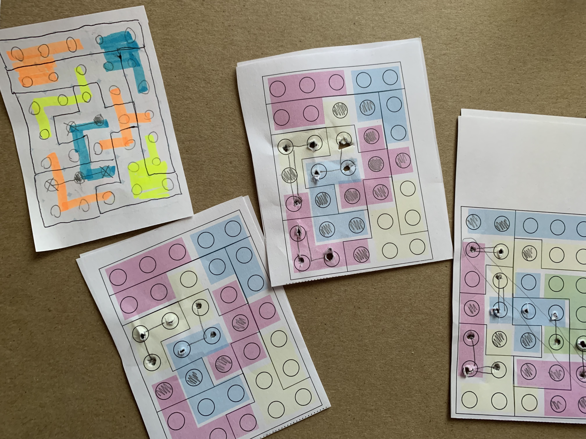

The Minocard
June 18, 2022 by Jorge Zhang

Introduction: In this 2 player game, you either play as Daedalus or the Minotaur. The Minotaur is trying to escape while Daedalus is trying to trap the Minotaur. We had a lot of different ideas for mechanics. One such idea was that the Minotaur would have to eat food every turn, which would be the main constraint on the Minotaur's movement and prevent them from making a beeline for the exit. Another idea was the idea of "keys" that the Minotaur would have to pick up in order to leave the maze through the exit.
Design notes: This game is currently in development and I am co-designing it with @mle_ from Board Game Geek.
The original idea from @mle_ was to make a 1 card maze game with hole punching as the main mechanic. I was actually thinking about maze games beforehand, where one of the mechanics could be one player building walls vs. another player going through the maze.
Link to BGG WIP thread
FILES FOR PILLAR VARIANT:
Single Card: Download
Instructions: Print then fold along the dotted line.
Three cards: Download
Instructions: Print then fold along the dotted line. This lets you play 3 times.
Rules: A file will be inserted later.
The Minotaur wins if they knock down enough columns, which causes the labyrinth to collapse. This occurs if the Minotaur manages to punch 5 holes along a diagonal, row, or column (not necessarily all adjacent in the case of a column). Daedalus wins if the Minotaur is trapped, which occurs when the Minotaur can no longer possibly win.
Starting with the Minotaur, the two players will take turns. The Minotaur begins on the center of the "plus" on the front side of the card. On the Minotaurs turn, the Minotaur will have 3 actions. They can spend 1 action to move to an adjacent space (diagonal movement not allowed) along a path that is not blocked by a wall. To keep track of where the minotaur is, use a pencil to trace its path. The minotaur can retrace their steps if they wish. The Minotaur can also spend 1 action to punch a hole in their current location as long as that space is not reinforced in by Daedalus. The Minotaur can also flip the card if they are on a hole, reappearing on the other side of that hole, but this does not cost an action and they can do this any number of times.
Daedalus has 2 actions. For 1 action, they can reinforce a pillar. They do this by filling in a pillar (represented by a circle) with pencil. Daedalus cannot flip the card- only the Minotaur can do that. Additionally, even if a column is reinforced on one side of the card, the Minotaur can still punch through it if it is not reinforced on the other side of the card.
Feel free to leave a comment if you have any suggestions for changes!
Change history:
6/18/22: published this page.